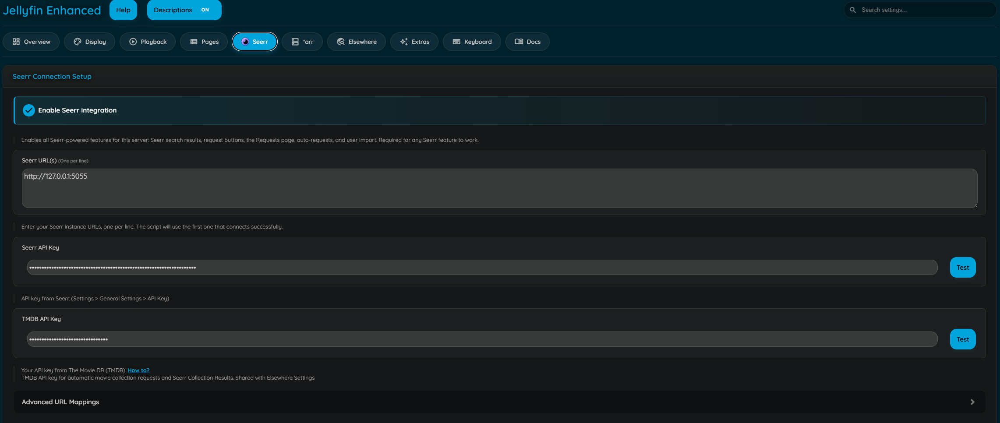
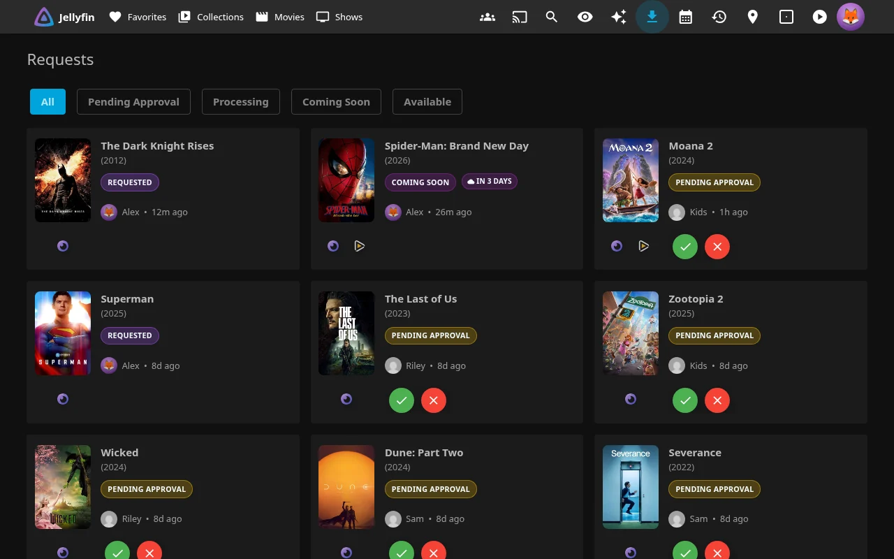

Seerr Integration
Search, request, and discover media directly from Jellyfin using your Seerr instance.

Note
This plugin is NOT affiliated with Seerr. Seerr is an independent project. This plugin simply integrates with it to enhance the Jellyfin experience.
Please report any issues with this plugin to the Jellyfin Enhanced repository, not to the Seerr team.
Features
- Search + Request - Search + request from Seerr, directly from Jellyfin search results - Advanced requests (requires configuration) - 4K Requests - 4K TV Requests - Season selection
- Requests Tab - View request status - pending, approved, available
- Recommendations + Discovery - Recommendations and similar items on detail pages
- Issue Reporting - Report problems directly to Seerr
- Watchlist Sync - Auto-add requested media to Jellyfin watchlist (requires the KefinTweaks plugin)
How it works
To ensure security and prevent CORS errors, the plugin uses the Jellyfin server as a proxy. This keeps your Seerr API key safe and avoids browser security issues.
Search Integration
Requesting:
- Type search query in Jellyfin search bar
- Results from both Jellyfin and Seerr appear
- Seerr results show request status
- Click to request or view details
- Scroll the Seerr row sideways; further pages load ahead of you (see Seamless Scrolling)
Tip
Enable Exclude search items already in library under Search & Requests to hide Seerr results you already have in Jellyfin, including shows where only some seasons are in your library, so the Seerr row only shows things you can request.
Warning
A movie in the library in a lower quality won't appear to request in higher quality like 4K, and a show with only some seasons won't appear to request the rest. Missing seasons can still be requested with the Request More button on the show's page, and anything can still be requested directly in Seerr.
4K TV Requesting:
- Enable 4K TV Requests in plugin settings.
- For TV results, use the request split-button dropdown and choose Request in 4K.
- The season selection modal opens in 4K mode.
- The modal header shows Request Series - 4K and the primary button shows Request in 4K.
Tip
In More Info modal, TV actions use Request More as the primary action, with Request in 4K in the dropdown when 4K is requestable.
Series without a TVDB match:
Some series (often anime and shorts) have no TVDB ID on TMDB, so Seerr cannot hand them to Sonarr. Seerr's own web UI asks you to pick the right match; the plugin does the same inside the season selection modal:
- A match series block appears above the season list, listing the candidates Seerr finds by searching Sonarr for the title.
- Click the correct match, or type the series' TVDB ID (the number in its thetvdb.com URL) if none of them fit or Seerr has no Sonarr configured.
- Request as usual; the request is sent to Seerr with that TVDB ID.
Series that already have a TVDB ID never show this block, and neither do series Seerr has already matched (for example after an earlier matched request), since Seerr reuses the ID it has stored.
Request Status Indicators:
- Available - Already in your library
- Pending Approval - Request submitted, awaiting admin approval
- Requested - Request approved, waiting to be downloaded
- Processing - Actively downloading
- Declined - Request was declined by an admin
- Not Requested - Click to request
Item Details
View Seerr recommendations and similar items on detail pages.
- Recommended items section
- Similar items section
- Request directly from recommendations
- Exclude items already in library
- Real-time request status
Configure
- Check "Show Seerr Recommendations and Similar items"
- Optional: Enable "Exclude already in library items"
- Optional: Enable "Exclude rejected items"
Discovery Pages
Browse and discover content by various criteria.
Available Discovery Types
- Genre Discovery - Browse by genre (Action, Comedy, etc.)
- Network Discovery - Browse by studio or network (Netflix, HBO, Marvel Studios, etc.). A studio's movies are shown beside the series it produced and a network's series beside its own movies, with an All / Movies / Series toggle whenever both exist; the Recommendations page's Studios and Networks tiles open the same kind of page. Series by studio come from TMDB rather than Seerr, so that half needs a TMDB API key, and its cards only show a request status for series already in the library (open the card for the rest)
- Person Discovery - Browse by actor, director, crew
- Tag Discovery - Browse by custom tags
Features
- Filter by TV/Movies/All, sort by Popular / Top Rated / Newest / Oldest
- Seamless infinite scroll (see Seamless Scrolling)
- Request directly from discovery
- Library awareness (hide owned items)
- Respects each user's parental controls (see Parental Ratings)
Configure
- Check respective discovery options in settings
- Access via custom navigation or direct URLs
Seamless Scrolling
Seerr search rows, the "More from" sections (genre, network, person, tag) and the Recommendations page load further results before you reach them, so scrolling never shows a loading gap while still showing every result:
- The section appears as soon as the page opens (its heading first, cards streaming in when Seerr answers) instead of waiting for Jellyfin's own list and every request to finish.
- A few screens of results are kept rendered ahead of you (about three screens for vertical sections, four row-widths for the search row once you start scrolling it). Several pages are fetched at once, more when filters hide most of a page, and the pages after those are prefetched into the cache.
- Filtered pages never stall the feed: if a page renders no cards (everything hidden, blocklisted or already in your library) the next pages are requested straight away. After 40 consecutive empty pages loading pauses on a Keep looking button rather than hammering Seerr; pressing it resumes exactly where the feed left off, so nothing is skipped.
- Card posters are loaded from TMDB as cards approach the screen rather than a whole page at a time.
- Failed page loads are retried with backoff and then offer Tap to retry. TMDB's 500-page limit is respected.
Parental Ratings
Seerr results respect each user's Jellyfin parental controls: Max Parental Rating, Block unrated items and Blocked / Allowed Tags from the user's policy. For a restricted user, titles they may not see are removed from search, discovery ("More from" sections and the Recommendations page), similar/recommended rows, person filmographies (including "known for" titles), collections, the requests list and page, the watchlist and the issue list; opening such a title's details, seasons or related rows, requesting it, or fetching it through the plugin's TMDB endpoints is refused. This is always on and needs no setting: users without any restriction are unaffected.
- Certifications are read from TMDB only for the server's metadata country (US when no country is configured) and scored with Jellyfin's own rating table. Missing or unrecognized local ratings follow the user's Block unrated items policy; ratings from other countries are not substituted. The More Info modal may show a different region's rating if a user has picked another Elsewhere region.
- Titles whose rating cannot be determined are hidden for restricted users. A discovery or search page whose lookups have not finished within the plugin's budget is re-fetched automatically once they have, rather than shown with gaps. Users without a limit are unaffected and nothing extra is fetched for them.
- Resolved ratings and keywords are cached server-wide for 24 hours so the extra lookups are one-off; a lookup that fails is retried after 5 minutes. With a TMDB API key configured the lookups use TMDB's small certification endpoints; otherwise Seerr's title details are used.
- Blocked Tags / Allowed Tags are enforced too. A blocked tag matches a title's TMDB keywords and genre names, so blocking "zombie" (a keyword Jellyfin would import as an item tag) or "horror" (a genre) both work; Allowed Tags act as a strict allow-list matched against keywords only, exactly like the library. Blocked tags always win. Keyword coverage on TMDB is community-sourced, so genre blocks give broader coverage than keyword blocks. A tag matches the same way it does in your library: the whole value, ignoring case only ("Sci-Fi" matches "sci-fi" but not "sci fi"), so a tag that works on your library items works here.
- Collection cards themselves (e.g. "Saw Collection") are not rated and stay visible; their parts are filtered when opened.
Issue Reporting
Report problems with media directly to Seerr.
Issue Types
- Video (quality, corruption, wrong file)
- Audio (sync, missing tracks, quality)
- Subtitles (sync, missing, incorrect)
- Other (metadata, artwork, etc.)
How to Report
- Open movie or TV show detail page
- Click report icon in action buttons
- Select issue type
- For TV: Select season and episode (optional)
- Enter description
- Submit report
Note
Issue reporting button will be hidden, if these are true:
- Seerr is not reachable
- User is not linked
Requests Page

Monitor active downloads from Sonarr/Radarr and manage Seerr requests and issues in one dedicated page.
Setup
- Go to Dashboard → Plugins → Jellyfin Enhanced
- Navigate to Seerr Settings tab
- Check "Enable Requests Page"
- Optionally check "Show Downloads in Requests Page" to display active *arr downloads (enabled by default)
- Optionally check "Show Seerr Issues Section" to display Seerr issues
- Choose integration method:
- Use Plugin Pages - Adds sidebar link (requires Plugin Pages plugin; Jellyfin 12: user profile menu instead)
- Use Custom Tabs - Adds custom tab (requires Custom Tabs plugin)
- Configure polling settings (see below)
- Click Save
- Restart Jellyfin if using Plugin Pages
Polling Settings
Enable Polling
- Auto-refresh download status
- Recommended: Enabled
Poll Interval:
- Default: 30 seconds
- Range: 30-300 seconds
- Lower = more frequent updates, higher server load
Usage
Access Requests Page
- Click "Requests" in sidebar (Plugin Pages; Jellyfin 12: user profile menu instead)
- Navigate to custom tab (Custom Tabs)
- Direct URL:
/web/index.html#!/jellyfinenhanced/requests
Features
- View active downloads (if enabled)
- View Seerr requests with status chips (Pending Approval, Requested, Processing, Declined)
- View reported issues (if enabled)
- Progress bars and ETA for downloads
- Quality and size information
- Filter by status
- Search functionality
- Approve / Decline buttons — admins and users with Manage Requests permission see green approve and red decline icon buttons on pending requests
Issues on Downloads Page
View and manage Seerr issues directly from the Requests page.
Features
- View all reported issues
- Filter issues by status
- Pagination support
- TMDB detail lookup with caching
- Issue card rendering with styling
- Open issue reporter modal from issues list
Configuration
- Go to plugin settings → Seerr Settings tab
- Check "Enable Requests Page"
- Check "Show Seerr Issues Section"
- Click Save
How to use
- Navigate to Requests page
- Issues appear in dedicated section
- Click issue to view details
- Use Seerr reporter modal for management
Watchlist Sync
Automatically sync watchlist items between Seerr and Jellyfin in both directions.
Seerr → Jellyfin
Note
Requires the KefinTweaks plugin to provide watchlist functionality
- Add requested items to Jellyfin watchlist when they become available in the library
- Sync Seerr watchlist items to Jellyfin
- Prevent re-addition of previously removed items
- Runs via the Sync Watchlist from Seerr to Jellyfin scheduled task
Jellyfin → Seerr
- Sync each user's Jellyfin watchlist to their linked Seerr watchlist
- Only syncs items that have a TMDB ID and a linked Seerr account
- Skips items already present in the Seerr watchlist
- Runs via the Sync Watchlist from Jellyfin to Seerr scheduled task (default: daily at 03:30)
Configuration:
- Add Requested Media to Watchlist - Auto-add when available
- Sync Seerr Watchlist - Sync Seerr watchlist to Jellyfin
- Sync Jellyfin Watchlist to Seerr - Sync Jellyfin watchlist to Seerr
- Prevent Watchlist Re-Addition - Remember removed items
- Memory Retention Days - How long to remember (default: 365)
Icon States
When on the search page, a Seerr icon indicates connection status.
| Icon | State | Description |
|---|---|---|
| Active | Seerr is successfully connected, and the current Jellyfin user is correctly linked to a Seerr user. Results from Seerr will load along with Jellyfin and requests can be made. |
|
| User Not Found | Seerr is successfully connected, but the current Jellyfin user is not linked to a Seerr account. If plugin auto import is enabled, linking will be attempted automatically. If disabled, import users manually in Seerr. Results will not load until linked. |
|
| Offline | The plugin could not connect to any of the configured Seerr URLs. Check your plugin settings and ensure Seerr is running and accessible. Results will not load. |
Troubleshooting
Connection Issues
Icon Shows Offline:
- Verify Seerr URL is correct and accessible
- Check Seerr is running
- Test connection in plugin settings
- Check server logs for errors
Icon Shows User Not Found:
- Verify "Enable Jellyfin Sign-In" is enabled in Seerr
- If plugin auto import is enabled, run Import Users Now from Jellyfin plugin settings
- If plugin auto import is disabled, import Jellyfin user manually in Seerr
- Ensure the user is not selected in the Blocked users list
- Ensure same username in both systems
Search Not Working
No Results Appearing:
- Check icon status (must be green/active)
- Verify API key is correct
- Check browser console for errors
- Test API endpoints manually
Results Slow to Load:
- Use internal Seerr URL
- Check network latency
- Verify Seerr performance
- Check server resources
Request Issues
Cannot Make Requests:
- Verify user has request permissions in Seerr
- Check request limits not exceeded
- Ensure item not already requested
- Check Seerr logs
Requests Not Appearing:
- Refresh Seerr page
- Check request was successful (no errors)
- Verify user permissions
- Check Seerr request queue
TMDB API Issues
If reviews, elsewhere, or Seerr icons not working:
- TMDB API may be blocked in your region
- Check Seerr troubleshooting
- Use VPN or proxy if needed
- Contact ISP about API access
Advanced Configuration
URL Mappings
Jellyfin and Seerr URLs can be mapped. This changes the Seerr URLs displayed to users, depending on which URL that access Jellyfin
Useful for mapping Seerr URLs to Jellyfin URls, for local access (LAN) and remote access
Examples
Auto-Request Settings
Automatically request media based on viewing behavior.
Auto Season Request:
- Trigger when X episodes remaining in season
- Require all episodes watched (optional)
- Configurable threshold
Auto Movie Request:
- Trigger on playback start
- Trigger after X minutes watched
- Check release date (only request if released)